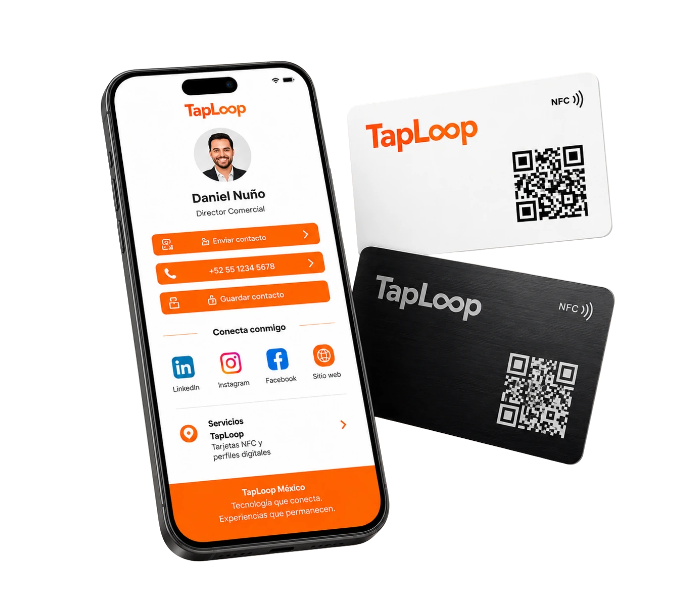
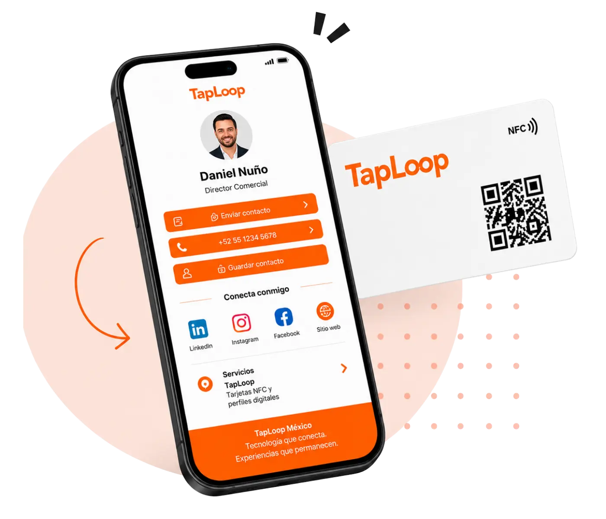
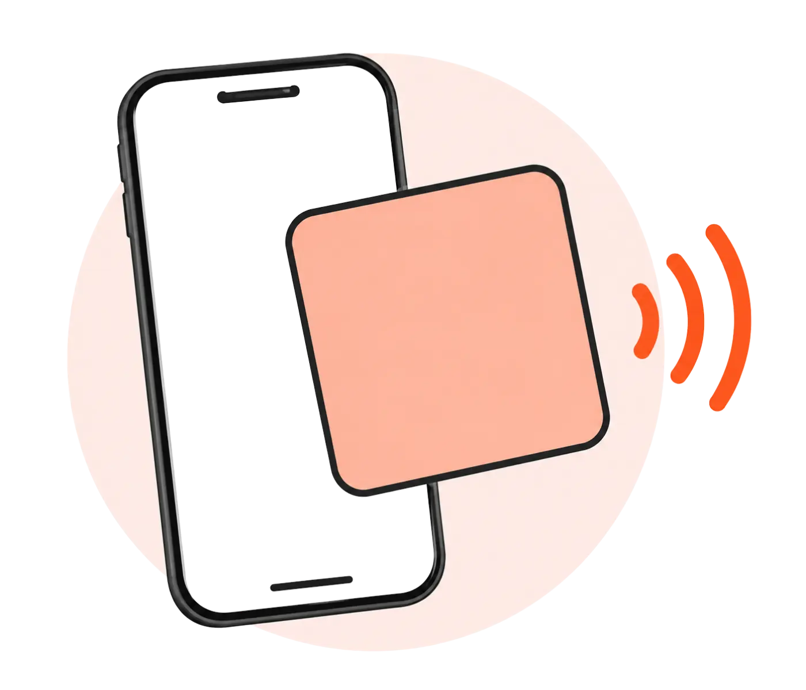
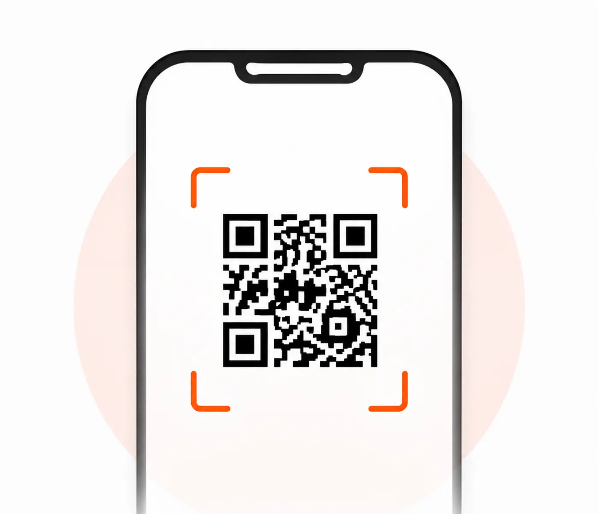
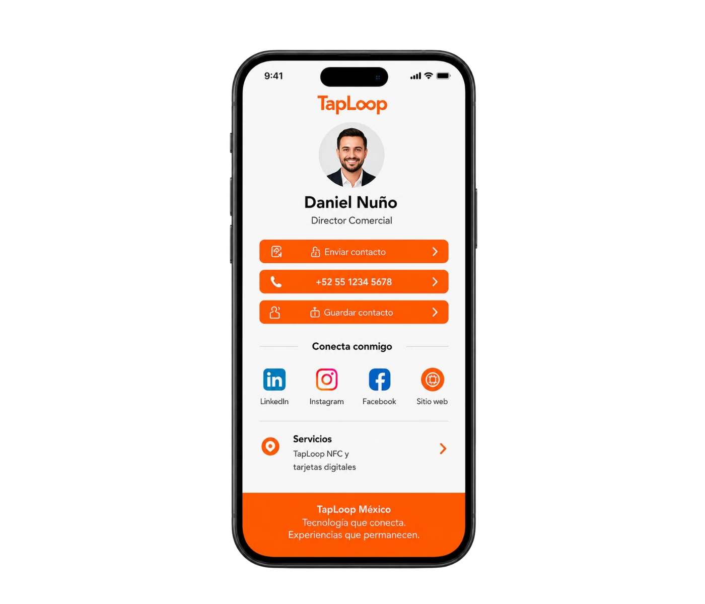

Compártenos tus datos
Logo, datos de contacto, enlaces y cantidad de tarjetas.
Cómo funciona TapLoop
Diseñamos tu tarjeta NFC y perfil digital, programamos el chip, vinculamos el código QR y la entregamos lista para compartir contacto, WhatsApp, redes y enlaces.


Así funciona TapLoop
Diseñamos, programamos y entregamos tus tarjetas NFC listas para compartir.
Logo, datos de contacto, enlaces y cantidad de tarjetas.
Recibes propuestas de tarjeta NFC y perfil digital alineadas a tu marca.
Ajustamos el diseño final y dejamos tus tarjetas listas para usarse.
Probamos, producimos y entregamos tus tarjetas listas para compartir.
Cómo la utiliza el cliente
La otra persona solo acerca su teléfono o escanea el código QR para abrir tu perfil digital y guardar tu contacto al instante.
O permite que escaneen el código QR de tu tarjeta.

El teléfono muestra tu perfil con botones de contacto, redes y enlaces.

Tu cliente puede guardar tu contacto, enviarte WhatsApp o visitar tu sitio web.

NFC y QR en una misma tarjeta
Cada tarjeta TapLoop integra tecnología NFC y código QR para compartir tu perfil digital de forma rápida, profesional y compatible con más dispositivos.



Funciones del perfil digital
Tu perfil digital TapLoop concentra la información más importante de tu negocio para que tus clientes puedan contactarte, guardar tu contacto y visitar tus enlaces al instante.

Permite guardar tus datos directamente en el celular.
Abre conversación con un toque.
Facilita el contacto inmediato.
Ideal para cotizaciones y seguimiento.
Dirige a tu página o landing page.
Conecta Instagram, LinkedIn, Facebook y más.
Comparte tu dirección o sucursal fácilmente.
Muestra productos, servicios o presentaciones.
Qué incluye TapLoop
La solución se prepara de principio a fin para que recibas una tarjeta de presentación digital NFC funcional y alineada con tu marca.
Tarjeta y perfil adaptados a tu logo, colores, nombre y estilo.
Datos, WhatsApp, correo, redes, sitio web y enlaces en un solo lugar.
Configurado para abrir el perfil al acercar la tarjeta al teléfono.
Abre el mismo perfil digital mediante la cámara del teléfono.
Revisamos NFC, QR, botones y enlaces antes de la entrega.
Te guiamos desde la recopilación de datos hasta la producción final.
Resolvemos las dudas más comunes sobre nuestras tarjetas NFC y perfiles digitales.
Es una tarjeta física con un chip NFC y un código QR que abre un perfil digital con datos de contacto, WhatsApp, redes sociales, sitio web y otros enlaces.
No. El perfil digital se abre directamente en el navegador de un teléfono compatible mediante NFC o al escanear el código QR.
Incluye tarjeta personalizada, chip NFC programado, código QR vinculado y un perfil digital de acuerdo con la solución elegida.
Sí. La mayoría de los teléfonos actuales pueden abrir el perfil mediante NFC y el código QR funciona como alternativa compatible.
Sí, de acuerdo con la solución contratada. Los datos y enlaces pueden actualizarse sin reemplazar la tarjeta física.
Sí. TapLoop crea una línea visual corporativa y personaliza los datos y el perfil digital de cada colaborador.
El tiempo depende de la cantidad, el material y la aprobación final del diseño. El plazo se confirma en cada cotización.
Nuestro equipo te ayuda a elegir la mejor opción.

Cuéntanos cuántas necesitas y nuestro equipo te prepara una propuesta personalizada.